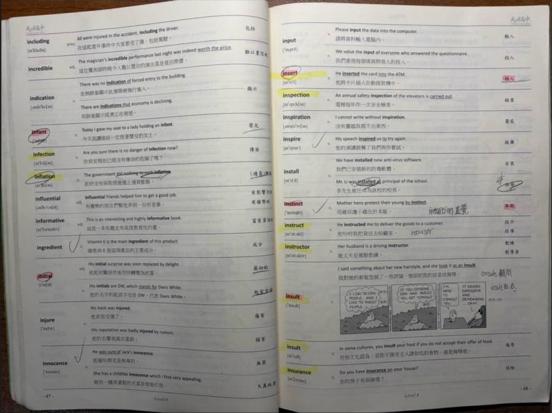

0全部單字
0不熟單字
題型:選中文意思
範圍(每 40 個字一頁,可以選好幾頁)
題數
答對/答錯音效
我的專屬網址:
版本
我的專屬網址:
版本
每個人有自己的題庫:拍自己課本上畫螢光筆的單字,練習紀錄也分開。
還沒有題庫?
建立和登入時,伺服器要開著;之後練習就不需要了。
連線中…
拍課本的單字頁(可以一次拍跨頁),有畫螢光筆的單字會被找出來,確認後加入題庫。一次最多 10 張,每張約 1–2 分鐘。

範例:攤開的左右兩頁一起拍,有畫螢光筆的單字(例如 infection、inflation、insert)會被找出來(點照片可以放大)
可以先離開這個畫面,之後回來「新增課本頁」就會看到結果。
點名字可以看他的單字和不熟單字,也可以用他的題庫做題(不會改到他的紀錄)。